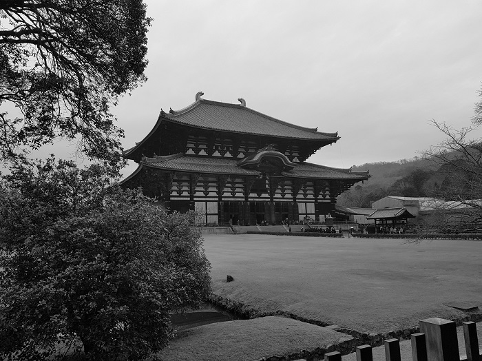

To transform an image to gray the red, green and blue values in the pixel have to be the same.
To achieve this I used a nested for loop to iterate over every pixel captured the red, green and blue values and calculated the average of that pixel.
I then assigned that value to the red, green and blue values in that pixel.